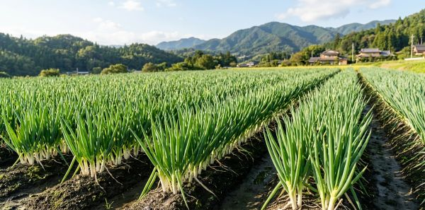

ピコぬ市内の生産者から届いた農産物を、
市役所1階の直売コーナーで販売していますぬー！

ピコぬネギ 入荷しています！
シャキッとした歯ごたえと、ほどよい辛みが特徴です。
※入荷状況は日によって異なります。
※売り切れの場合があります。
| 品目 | 価格 | 備考 |
|---|---|---|
| ピコぬネギ | 120円 | 市内産・特産品 |
| 季節の野菜 | 各種 | 入荷時のみ販売 |
※価格は変更になる場合があります。
※農産物のため、天候などにより入荷しない場合があります。
ピコぬネギは、そのまま焼いても、料理に入れてもおいしくいただけます。
ピコぬ市の農産物を使った料理を楽しめるお店を、
観光課で順次ご紹介しています。
場所：ピコぬ市役所 1階
販売：市内産農産物
お問い合わせ：ピコぬ市役所 観光課
※農産物の取り置き・予約は受け付けていません。
※販売状況については、窓口までお問い合わせください。